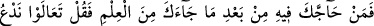
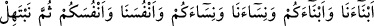
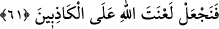

“Gerçek Rabbinden gelendir.” Yani Îsâ ve annesi ile ilgili olarak bizim
anlattıklarımız gerçektir. Yoksa hıristiyanların ne “Îsâ Allah’ın oğludur” sözleri, ne de
“Meryem bir Tanrı doğurmuştur” demeleri ve benzeri sözleri gerçektir. “Öyleyse
kuşkulananlardan olma.” Yani bu konuda şüphe edenlerden olma. Buradaki hitap,
kalbini daha da sabitleştirmek için dikkat çekme metodu üzere Hz. Peygamber (s.a.)’e
yöneltilmiştir. Çünkü bir şeyi gerçek mânada yasaklamak, yasaklanan şeyin muhataptan
sâdır olduğunu akla getirir. Halbuki Hz. Peygamber (s.a.)’in bizzat kendisine indirilen
şeyin doğruluğunda şüphe etmesi düşünülemez. Buna göre; âyetin mânası şöyle olur:
Kesin bilginde, bunun gerçekliğine dâir kesin inancında ve bu gerçekten şüphe
etmemekte berdevam ol.
İmam Ebû Mansûr (rh.a.) şöyle diyor: Peygamberin mâsûmluğu, onun imtihân
edilmesine ve kendisine yasak konulmasına bir engel teşkîl etmez.
61. Sana bu ilim geldikten sonra seninle bu konuda çekişenlere de ki: Geliniz,
sizler ve bizler de dâhil olmak üzere, siz kendi çocuklarınızı biz de kendi
çocuklarımızı, siz kendi kadınlarınızı, biz de kendi kadınlarımızı çağıralım, sonra da
duâ edelim de Allah’dan yalancılar üzerine lânet dileyelim.
“Sana gelen bu ilimden sonra” Sana gelen durumun böyle olduğunu kat’î bir şekilde
gösteren apaçık âyetlerden ve bunları senden duyduktan sonra dalâlet ve taşkınlıkları
sebebiyle bunlara gözlerini kapamaktan vazgeçme. Îsâ ve annesinin durumlarının
anlatıldığı gibi olmadığını söyleyerek hıristiyanlardan “seninle çekişenlere de ki:”
Onlarla konuşmayı kes ve onlara inatçılara davranıldığı gibi davran. Bu davranma tarzı
da onları lânetleşmeye çağırmandır. Âyetteki “gelin” mânasına gelen “teâlev”
kelimesinin kökü olan “teâlî”, aslında yükselme mânasındadır. Sanki, dâvet eden
yüksek bir yerde, dâvet edilen de alçak bir yerde imiş de onun kendi mevkîine
çıkmasını emretmiş gibi. Bu kelime daha sonra nerede olursa olsun, çağrılan herkes için
kullanılmaya başlanmıştır.
“Geliniz” yani görüşünüzü ve gayretinizi ortaya koyun. Bu gelme bedenlerle olan
gelme değildir. Çünkü, onlar zâten bedenleri ile Hz. Peygamber (s.a.)’in yanında
bulunuyorlardı. “Oğullarımızı ve oğullarınızı çağıralım,” ibâresiyle oğulları
zikretmekle yetinilmiş, kızların zikrine gerek duyulmamıştır. Kadınlar ise başka
özellikleri dolayısıyla zikredilmişlerdir. “Kadınlarımızı ve kadınlarınızı, kendimizi ve
kendinizi” ibâresiyle her birimiz kendisini, en değerli ve en çok sevdiği aile fertlerini